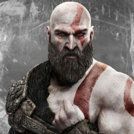
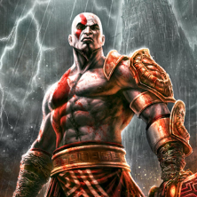
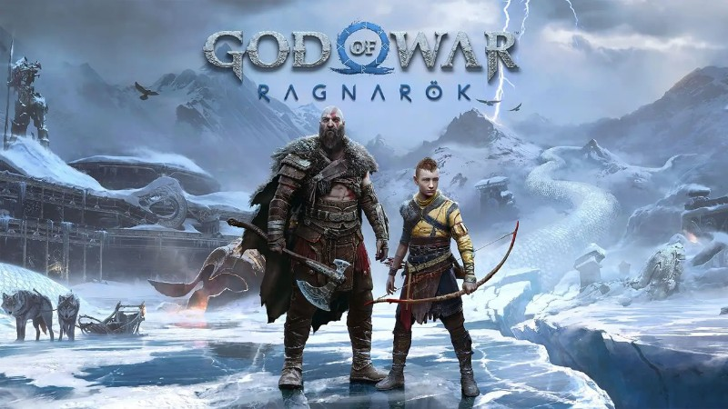

Kratos
• Kratos é um personagem de jogos eletrônicos da franquia God of War da Santa Monica Studio, que é baseado nas mitologias grega e Kratos também conhecido como "Fantasma de Esparta" apareceu pela primeira vez no jogo eletrônico de 2005, God of War que levou ao desenvolvimento de mais sete jogos com o personagem como protagonista.

Fantasma de Esparta
• Nascido na cidade-estado Grega de Esparta, Kratos é o filho semideus de Zeus e uma mulher mortal chamada Calisto, embora ele não saiba quem é seu pai durante a maior parte de sua vida. Hera ordenou a execução de Kratos up no dia em que ele nasceu, mas o Rei dos Deuses se apiedou da criança e se recusou, deixando-o em Esparta para ser criado por Calisto.

• God of War Ragnarok recebeu um novo (e por enquanto único) trailer durante o Playstation Showcase de 9 de setembro, e mostrou um pouco mais da narrativa que do que será o segundo e último capítulo da aventura de Kratos e seu filho Atreus, com ambos envolvidos de alguma forma no titular Ragnarok o fim do mundo de acordo com a mitologia nórdica Algo que vale destacar nisso tudo é como o trailer mostra Atreus em busca de respostas sobre quem ele de fato é, além de mostrar alguns dos personagens novos que farão parte da jornada.